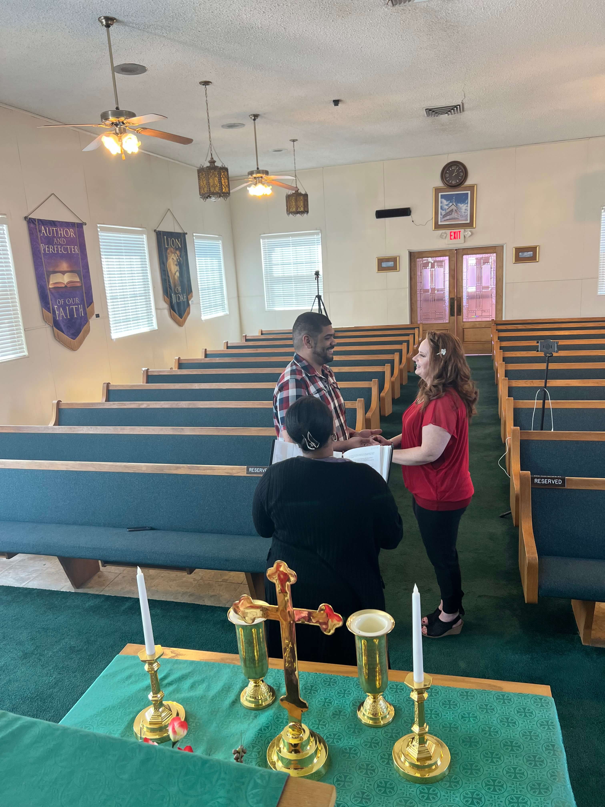
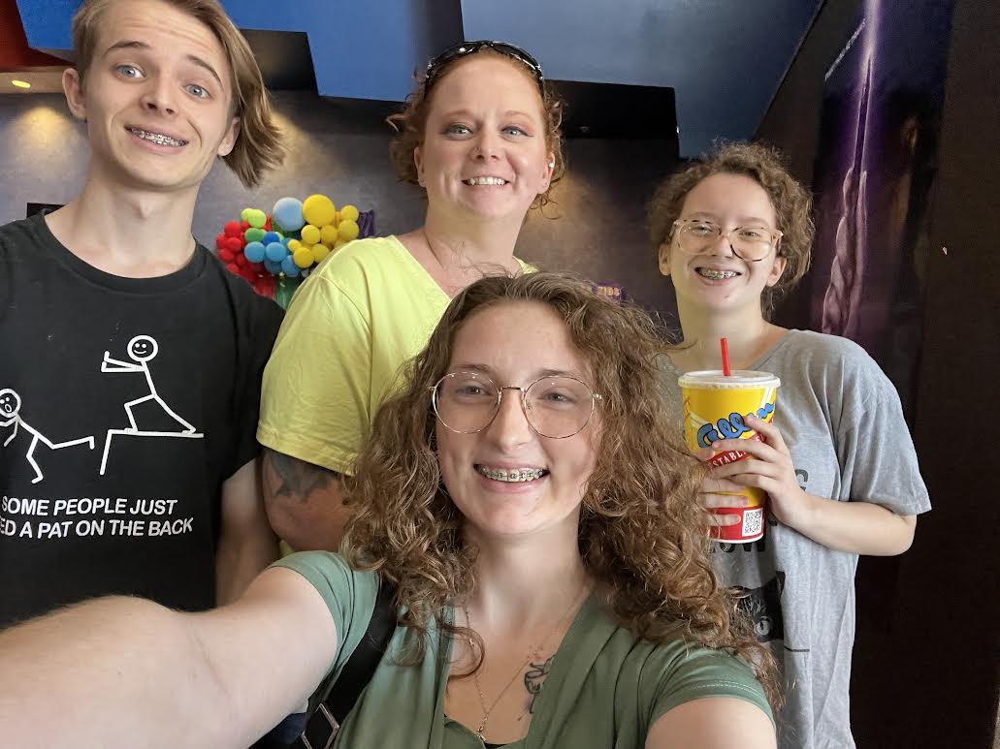
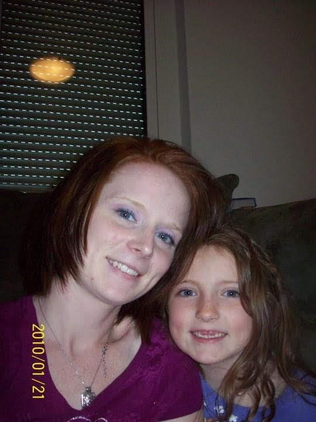
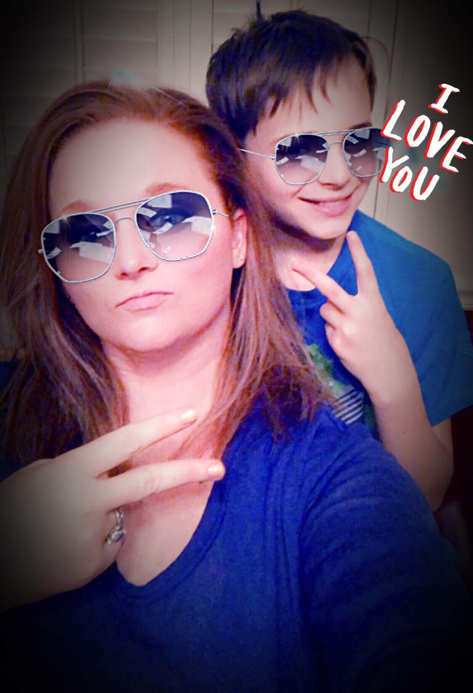
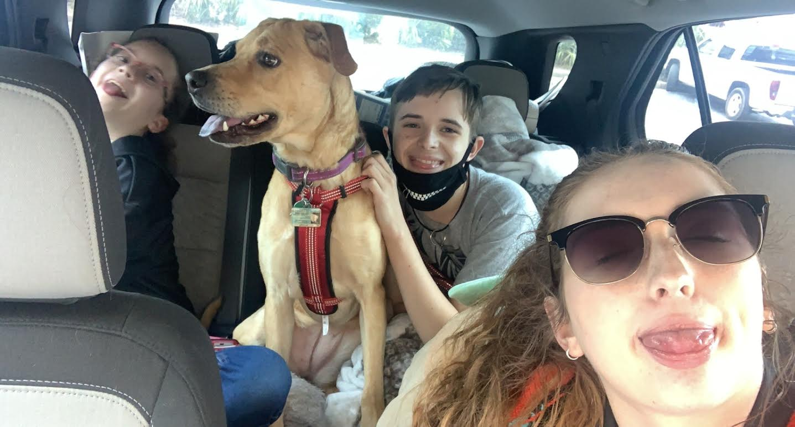
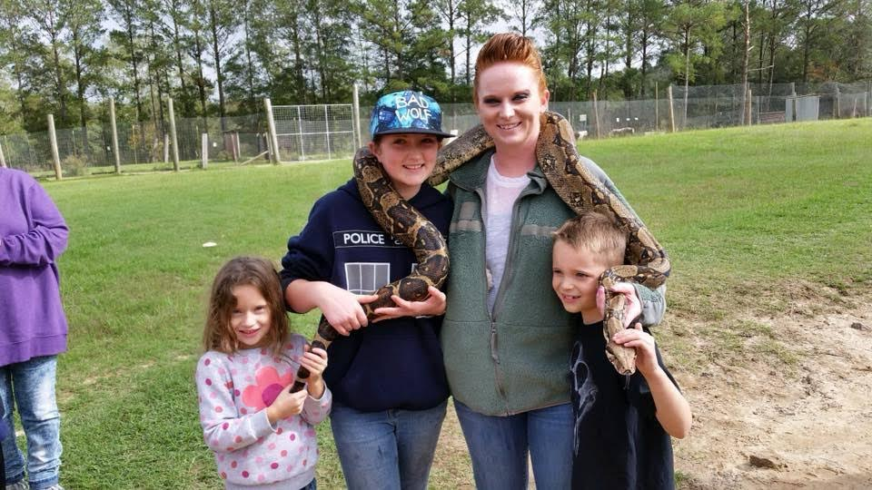
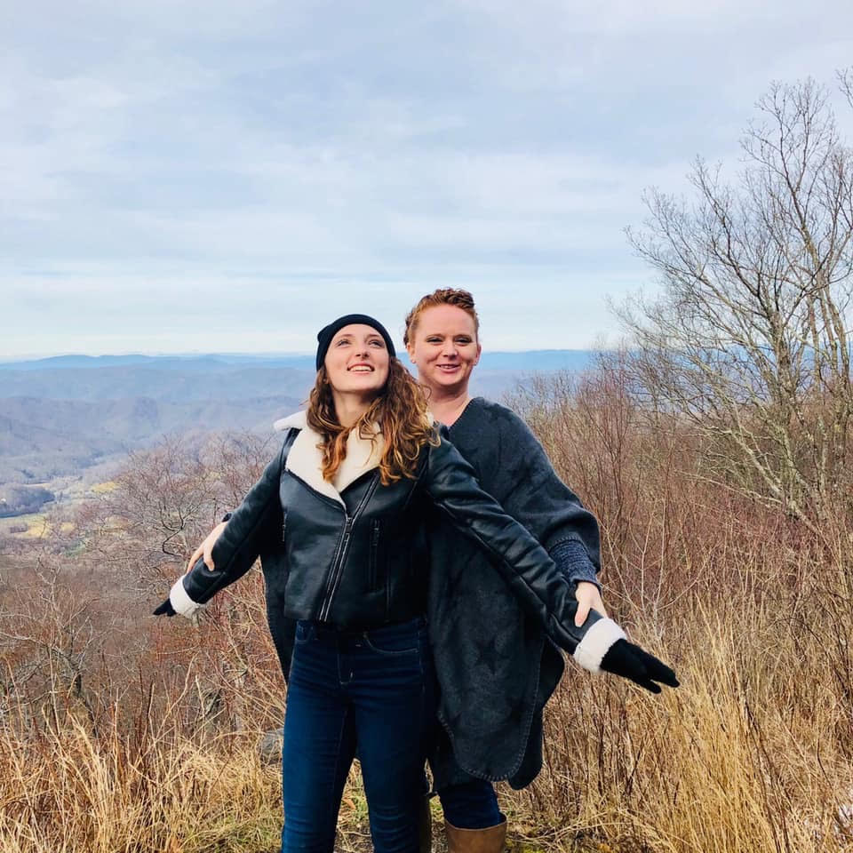
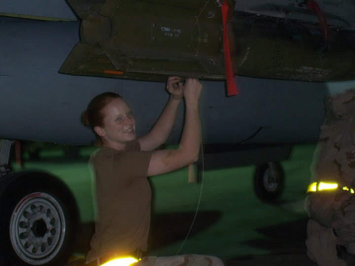

Photo Gallery

I felt like this was the perfect photo to add here because it shows just how strong of a woman you are. From the moment you learned that your life would forever change, you've been making sacrifices to give your children a better life. (And I think you’ve done pretty darn well so far.)
At 21, I now see those sacrifices in a new light. I understand the weight you carried — the ache of leaving, the strength it took to keep going, and the courage to return, knowing that every sacrifice was for something bigger.
You fought for your dreams, for our future, for us.

My high school graduation, a milestone I worked so hard for. As the firstborn, I’ve always felt the weight of expectation, but also the warmth of knowing I’m paving the way for the rest of the family. This photo isn’t just a celebration of my achievement, but a reflection of all the love, sacrifice, and encouragement you've given me.
Mom, today marks the day you married Ortiz! What a special day it is. I knew from the start that this moment would be different, because today, I knew you were finally going to be taken care of the way you deserve. Ever since Ortiz came into our lives, he’s brought balance to the beautiful chaos of our family. Who would've thought that moving to Alabama would change everything? Sometimes I wonder if the universe placed us there just so you could share a slice of cake with the person meant for you.
It’s like he’s your missing puzzle piece. He grounds you, and in him, I see you flourish; not just as a partner, but as a person. The way he loves and respects you shows me what love is supposed to look like. If I’m ever lucky enough to have a relationship, I hope it feels like yours.
You’re not just surviving life anymore—you’re living it, fully and joyfully. Congratulations again on your marriage, Mom. Here’s to forever.
 This one’s for the smiles: literally! You’ve invested in every single one of these grins, and now we’ve got the confident, camera-ready smiles to prove it. From braces to retainers, dental visits to whitening strips, you’ve made sure we could smile big without holding back.
You looked at me and still saw beauty. You reminded me that my worth was never in how I looked, but in who I am. You made me laugh when I had no teeth!
These teeth aren’t just straight, they’re a testament to your love, patience, and commitment to helping us put our best face forward (literally). Thank you for every appointment, every copay, and every “don’t forget to wear your retainer or did you brush your teeth” speech.
This photo of Mom and Tyler takes me back to simpler times, when he was still little and easy to scoop up for a picture. He’s always been a bit camera-shy, but his love for Mom has never been quiet.
Now he’s 18, about to graduate and head off to college, and it’s hard to believe how quickly time has flown. I’m finishing college, our sister is just starting her high school journey, and here we are—growing up, but still grounded by the same love that’s always held us together.
Tyler might not say much, but he has the sweetest heart, and the bond he shares with Mom is something really special.
This photo was taken during the beginning of our journey to New Mexico, right as we made a stop in New Orleans. We found reasons to laugh, bond, and make memories that still make us smile today.
We all made our best attempt at copying Logan, and honestly, it turned into one of those goofy, unforgettable moments that captures exactly who we are as a family.
This photo was taken not long after we first moved to Alabama. We had just gone out to this private zoo. I remember we held snakes, saw some monkeys.
It was such a fun and random day, one of those memories that just sticks with you. I can’t wait to make more moments like this with my family.
This photo was taken after a family hike, right at the top of the port. Mom and I couldn’t resist joking around and striking a pose like they do in *Titanic*, arms out, wind in our hair, totally dramatic and loving every second of it.
It’s little moments like these that remind me how much fun we have together. No matter where we are, we always find a way to laugh, be silly, and make memories that stick.
I call this one “The Legend Herself.” This was when you were just starting out, fresh in the Air Force, a baby maintainer, and already showing the kind of strength most people spend a lifetime trying to find.
You had just stepped into a whole new world, balancing your role as a young mom and a service member. Looking back at this photo now, I see more than just a uniform or a serious face. I see power, purpose, and pride. You were doing what needed to be done for your family, and you did it with grace and grit, even when it was hard.
You were and still are a force to be reckoned with. This picture marks the beginning of a journey that shaped not just your future, but all of ours too. You’ve always been a legend in my eyes.